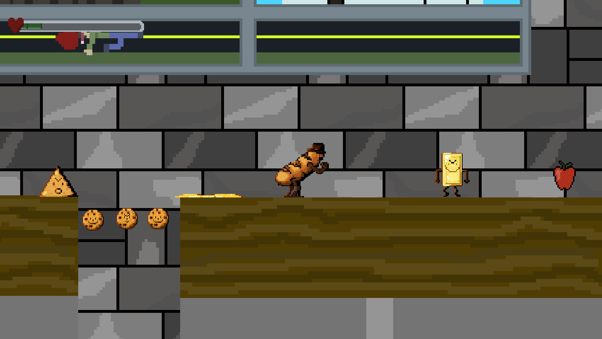
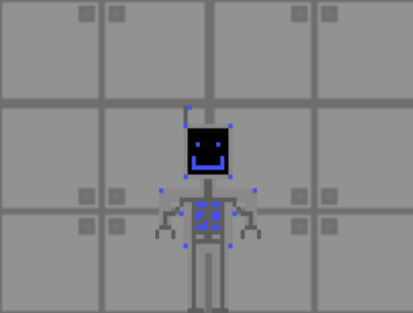
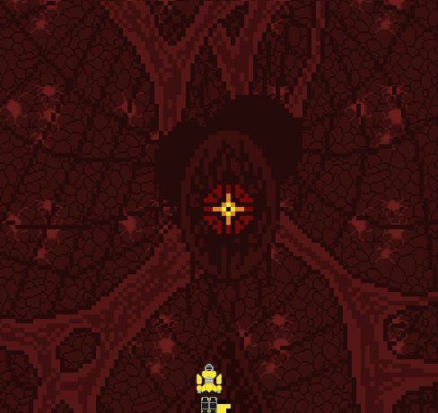

Bready Or Knot: Fully Baked is a comedic platformer. It is currently in early stages of development. I am working primarily as the narritive designer, creating the story and writing the dialogue, as well as assisting with game design. So far, there is no dialogue in the game, but we plan to add it in the near future.
Bready Or Knot: Fully Baked
Run, Bartholomew, Run! is an original game created for a project in the Gaming and Multi-Media class. In the game, you must use different upgrades
to escape the ghost released into the facility while trying to reach the end of each level in order to acheive the final goal; escaping the lab.
Pictured below is the main character,
Bartholomew. Below is a link to play the game. It includes three levels and wasn't fully finished.
The image below shows the main character Bartholomew from the front.

Apollyon is a game that I worked on alongside three of my friends for another project in the Gaming and Multi-Media class. I worked on the story and wrote all the dialogue for the game. I also implemented the dialogue system into the game. The art, music, and coding all came out well and everyone seems to agree that we are proud of the work we put into the game. I do also think the story I created was at the very least somewhat interesting. The game takes place in Russia. The player has to travel deep into caves while avoiding anomolies throughout the levels. The game does have some glitches and is far from perfect due to the one month time limit we had to complete the project.
Apollyon